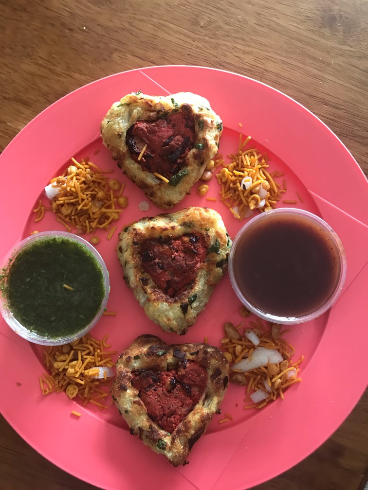

Cutlet

Ingredients
- 1 can Red beans( 400 GMs)
- 2 boiled potatoes
- 1 1/2 corn flour
- 1 tsp butter
- 1 cup chopped onion
- 1 tsp finely chopped garlic
- 1 tsp coriander powder
- 1 tsp cumin seed
- 2 green Chilies
- 1/2 pinch red color( not necessary)
- 1 tsp Goda/ Garam Masala( Ambari)
- 1/4 cup chopped coriander
- 1 tsp Salt
- Garnishing 1/2 cup Green chutney
- 1/2 cup Tamrind chutney
- 1/4 cup Farsan/ savoury sev snack
Directions
- Washed red bins, take it in bowl with no water left.
- Smashed it and add color, half onion, half cumin, half coriander powder, 1/2 masala,1/2 tsp corn flour and little salt.
- Mix well and make small ball Squeeze this ball from two opposite sides and press it in middle from upper side to make heart shape
- Now in bowl smashed potato and mix all remaining half ingredients with coriander leaves all together.
- Make roll and stick it around red heart Now apply butter and shallow fry it on nonstick pan or griddle or in airfryer at 200 degree for 15 mins or till golden
- Serve with green and tamrind chutney or like cutlet chat.
- Beans part is very crunchy like cookies and outer part is soft tikki which is awesome combination.